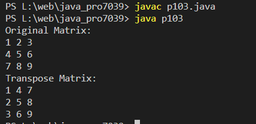

Write a Java Program to Display Transpose Matrix.
Code:-
public class p103 {
public static void main(String[] args)
{
int rows = 3, cols = 3;
int[][] matrix = {
{ 1, 2, 3 },
{ 4, 5, 6 },
{ 7, 8, 9 }
};
int[][] transpose = new int[cols][rows];
for (int i = 0; i < rows; i++) {
for (int j = 0; j < cols; j++) {
transpose[j][i] = matrix[i][j];
}
}
// Display the original matrix
System.out.println("Original Matrix:");
displayMatrix(matrix);
// Display the transpose matrix
System.out.println("Transpose Matrix:");
displayMatrix(transpose);
}
public static void displayMatrix(int[][] matrix) {
for (int[] row : matrix) {
for (int value : row) {
System.out.print(value + " ");
}
System.out.println();
}
}
}
Output:-
